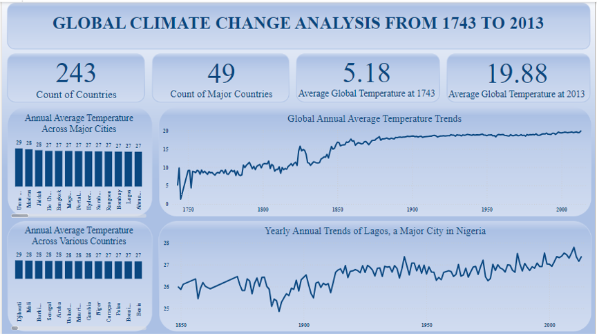
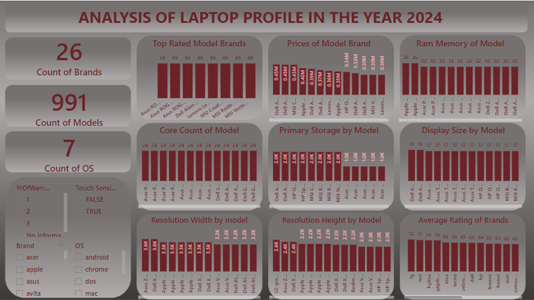

Climate Change Trend From the 17th century to Present Century

Climate change, defined as long-term alterations in temperature, precipitation, and other atmospheric conditions on Earth, is a defining challenge of our time. These changes result primarily from human activities such as burning fossil fuels, deforestation, and industrial processes that have dramatically increased greenhouse gas emissions. Over the past century, these activities have led to global warming and significant shifts in weather patterns. The impacts of climate change are multifaceted, affecting ecosystems, sea levels, and weather extremes. These changes threaten biodiversity, food security, and human health, compelling communities and nations to adapt to a rapidly shifting environment.

In the recent years there are a lot of tech professionals, enthusiast and a lot of remote workers. In other for each of them to carry out their work effectively they need to be in possession of a good and efficient system or laptop. Unfortunately, not everyone has knowledge on the characteristics of an efficient system. This analysis is carried out to educate aspiring and already tech professionals on the characteristics of an efficient laptop in other to carry out their work efficiently and with ease.